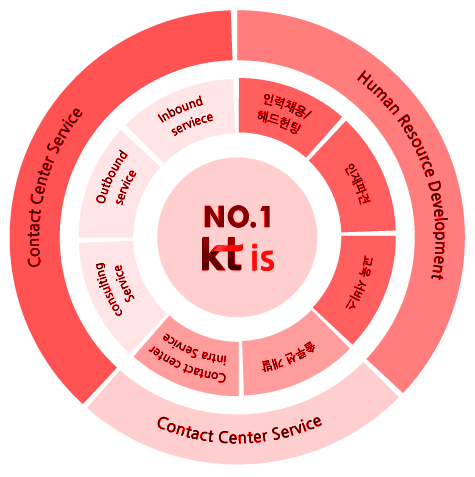

Biz솔루션사업
NO.1 고객서비스 전문 기업 kt is사업영역
고객을 위한 더 큰 가치를 kt is 가 함께 만들어 가겠습니다.
kt is 는 고객만족서비스 기반의 국내 최고 콜센터 아웃소싱 전문업체로 80년의 KT114 번호안내를 비롯한 다양한 운영 경험을 통해 콜센터 운영, 컨설팅, 시설임대, 구축 및 AP 개발지원, 인재파견, 교육 등의 고객 맞춤형 컨택사업/ 토탈아웃소싱 사업을 수행 하고 있습니다.
- 
-
- Contact Center Service
- consulting Service
- Outbound Service
- Inbound Service
-
- Human Resource Development
- 인력채용/헤드헌팅
- 인재파견
- 교육 서비스
-
- Contact Center Service
- 솔루션 개발
- Contact center intra Service
- Consulting Service
kt is는 콜센터 상담인력의 업무능력 향상 및 지속적인 상담skill 향상을 위해 연간 상시 교육계획을 수립하여 신입입문교육부터 상담능력 수준별 교육까지 실시하고, 체계적 경력관리를 통한 동기부여와 지속적인 관리자 역량강화 교육으로 최고의 상담전문가 그룹을 양성하고 있습니다.
아웃소싱
kt is 아웃소싱이란? 기업 업무의 일부 프로세스를 경영 효과 및 효율의 극대화를 위한 방안으로 업무를 위탁하여 처리 하는 것으로 해당 기업이 가장 유력한 분야나 핵심역량에 자원을 집중시키고, 나머지 활동은 외부 전문기업으로 위탁처리함으로써 리스크 분산, 비용절감을 극대화 할 수 있습니다.
- 아웃소싱
- 자체적으로 수행해오던 업무를 외부업체에 위탁하여 운영하는 것으로, 운영업체에서 운영전반을 책임지며 사용주는 운영업체와 계약관계, 운영업체는 근로자와 계약관계
- 인력파견
- 파견업체가 근로자를 고용한 후 그 고용관계를 유지하면서 근로자 사용 사업주에 근무 파견하고 근로자는 사용 사업주의 지휘명령을 받음
- 자체운영
- 사용주가 인력에 대한 모집, 복무관리, 생산성, 노사문제, 교육 및 복리 후생까지 모든 부분을 직접 운영 하는 것을 말함